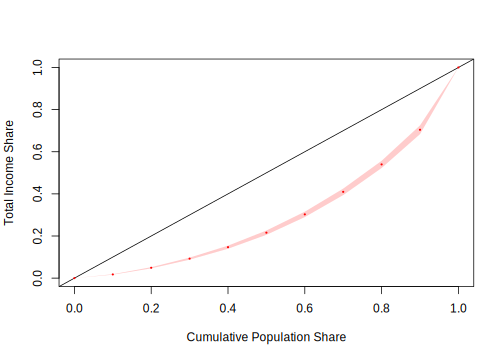

4.2 Estimación puntual
Después de realizar el análisis gráfico de las tendencias de las variables continuas de la encuesta, es necesario obtener las estimaciones puntuales de los parámetros que se midieron. Dichas estimaciones se pueden obtener de forma general, para toda la población, o desagregadas por dominios de interés, de acuerdo con las necesidades de la investigación. Entiéndase como estimaciones puntuales en el contexto de las encuestas de hogares a la estimación de totales, promedios, razones, medias, etc. Como lo mencionan Heeringa, West, y Berglund (2017), la estimación de los totales o promedios de un avariable de interés en la población junto con la estimación de su varianza ha jugado un papel muy importante en el desarrollo de la teoría del muestreo probabilístico, dado que permiten llegar a valores insesgados y precisos, dando una estimación muy acertada de lo que está pasando en los hogares estudiados y con ello tomar decisiones de política publica de manera informada.
4.2.1 Estimación de totales
Una vez definido el diseño muestral, lo cual se hizo en la sección anterior, se procede a realizar los procesos de estimación de los parámetros de interés. Para la estimación de totales con diseños muestrales complejos que incluyen estratificación \(\left(h=1,2,...,H\right)\) y submuestreo en las UPM (que se suponen están dentro del estrato \(h\)) indexadas por \(\alpha=1,2,...,a_{h}\), el estimador para el total se puede escribir como:
\[\begin{eqnarray} \hat{y}_{\omega} & = & \sum_{h=1}^{H}\sum_{\alpha=1}^{a_{h}}\sum_{i=1}^{n_{h\alpha}}\omega_{h\alpha i}y_{h\alpha i}. \end{eqnarray}\]
En donde \(n_{h\alpha}\) es el tamaño de muestra de hogares o personas en la UPM \(\alpha\) del estrato \(h\); \(a_{h}\) es el tamaño de muestra de UPM dentro del estrato \(h\); \(H\) es el total de los estratos en el diseño de muestreo. Finalmente, \(y_{h\alpha i}\) y \(\omega_{h\alpha i}\) corresponden respectivamente con la observación de la variable de interés y el factor de expansión del elemento \(i\) asociado a la UPM \(\alpha\) dentro del estrato \(h\). El estimador insesgado de la varianza para este estimador \(\hat{y}_{\omega}\) es:
\[\begin{eqnarray} \widehat{var}\left(\hat{y}_{\omega}\right) & = & \sum_{h=1}^{H}\frac{a_{h}}{\left(a_{h}-1\right)}\left[\sum_{\alpha=1}^{a_{h}}\left(\sum_{i=1}^{n_{h\alpha}}\omega_{h\alpha i}y_{h\alpha i}\right)^{2}-\frac{\left({ \sum_{\alpha=1}^{a_{h}}}\omega_{h\alpha i}y_{h\alpha i}\right)^{2}}{a_{h}}\right] \end{eqnarray}\]
Como se puede observar, calcular la estimación del total y su varianza estimada es complejo. Sin embargo, dichos cálculos se pueden hacer en R mediante la función svytotal. El intervalo de confianza está dado por la siguiente expresión:
\[\begin{eqnarray} \hat{y}_{\omega} \pm 1.96 * \sqrt{\widehat{var}\left(\hat{y}_{\omega}\right)} \end{eqnarray}\]
El intervalos de confianza en R se calcula con la función confint. A continuación, se muestran los códigos pertinentes:
## total SE DEff
## Income 85793667 4778674 11## 2.5 % 97.5 %
## Income 76427637 95159697Los argumentos que utiliza de la función svytotal son muy sencillos. Para el ejemplo, se introduce primero la variable en la cual está la información que se desea estimar (Income). Posterior a esto, se introduce el diseño muestral del cual proviene la muestra y, por último, se indica si desea que se reporte el efecto de diseño deff de la estimación o no. Por otro lado, para el cálculo del intervalo de confianza, lo único que se requiere es indicarle a la función confint el estimador y la confianza requerida.
Para seguir ilustrando el uso de la función svytotal y de confint, estimaremos el total de gastos de los hogares, pero ahora el intervalo de confianza se calculará al 90% de confianza. Los siguientes códigos realizan las estimaciones:
## total SE DEff
## Expenditure 55677504 2604138 10.222## 5 % 95 %
## Expenditure 51394077 59960931Si el objetivo ahora es estimar el total de los ingresos pero discriminando por sexo, se utilizará la función cascadede la librería srvyr, la cual permite agregar la suma de las categorías al final la tabla. También se utilizará la función group_by la cual permite obtener resultados agrupados por los niveles de interés.
diseno %>% group_by(Sex) %>%
cascade(Total = survey_total(Income, level = 0.95,
vartype = c("se", "ci")),
.fill = "Total ingreso")## # A tibble: 3 × 5
## Sex Total Total_se Total_low Total_upp
## <chr> <dbl> <dbl> <dbl> <dbl>
## 1 Female 44153820. 2324452. 39551172. 48756467.
## 2 Male 41639847. 2870194. 35956576. 47323118.
## 3 Total ingreso 85793667. 4778674. 76331414. 95255920.Como se pudo observar en lo códigos anteriores, otra forma de obtener las estimaciones del total, su desviación estándar y el intervalo de confianza es usando el argumento vartype e indicándole las opciones “se”, “ci” respectivamente.
4.2.2 Estimación de promedios
La estimación del promedio o media poblacional es un parámetro muy importante en las encuestas de hogares. Según Gutiérrez (2016), un estimador de la media poblacional se puede escribir como una razón no lineal de dos totales de población finitas estimados como sigue:
\[\begin{eqnarray} \hat{\bar{y}}_{\omega} & = & \frac{\sum_{h=1}^{H}\sum_{\alpha=1}^{a_{h}}\sum_{i=1}^{n_{h\alpha}}\omega_{h\alpha i}y_{h\alpha i}}{\sum_{h=1}^{H}\sum_{\alpha=1}^{a_{h}}\sum_{i=1}^{n_{h\alpha}}\omega_{h\alpha i}} = \frac{\hat{y}_{\omega}}{\hat{N}_{\omega}}. \end{eqnarray}\]
Como observación, se debe tener en cuenta que, si \(y\) es una variable binaria, la media ponderada estima la proporción de la población. Por otro lado, como \(\hat{\bar{y}}_{\omega}\) no es una estadística lineal, no existe una fórmula cerrada para la varianza de este estimador. Es por lo anterior que, se deben recurrir a usar métodos de remuestreo o series de Taylor. Para este caso en particular, usando series de Taylor, la varianza del estimador es como sigue:
\[\begin{eqnarray} var\left(\hat{\bar{y}}_{\omega}\right) & \dot{=} & \frac{var\left(\hat{y}_{\omega}\right)+\hat{\bar{y}}_{\omega}^{2}\times var\left(\hat{N}_{\omega}\right)-2\times\hat{\bar{y}}_{\omega}\times cov\left(\hat{y}_{\omega},\hat{N}_{\omega}\right)}{\hat{N}_{\omega}^{2}} \end{eqnarray}\]
Como se puede observar, el cálculo de la estimación de la varianza tiene componentes complejos de calcular de manera analítica, como la covarianza entre el total estimado y el tamaño poblacional estimado. Sin embargo, R incorpora estos cálculos de forma automática. A continuación, se presenta la sintaxis para estimar la media de los ingresos.
## mean SE DEff
## Income 570.945 28.478 8.8211## 2.5 % 97.5 %
## Income 515.1299 626.7607Como se puede observar, los argumentos que utiliza la función svymean para realizar la estimación del promedio de los ingresos, junto con su error estándar estimado son similares a los utilizados con la función svytotal. Algo similar ocurre con los intervalos de confianza. Por otro lado, se estima la media de los gastos en los hogares como sigue a continuación:
## mean SE DEff
## Expenditure 370.526 13.294 6.0156## 2.5 % 97.5 %
## Expenditure 344.4697 396.5829También se pueden realizar estimaciones de la media por subgrupos siguiendo el mismo esquema mostrado para la función svytotal. Particularmente, los gastos de los hogares discriminados por sexo es:
diseno %>%
group_by(Sex) %>%
cascade(Media = survey_mean(Expenditure, level = 0.95,
vartype = c("se", "ci")),
.fill = "Gasto promedio") %>%
arrange(desc(Sex))## # A tibble: 3 × 5
## Sex Media Media_se Media_low Media_upp
## <chr> <dbl> <dbl> <dbl> <dbl>
## 1 Male 374. 16.1 343. 406.
## 2 Gasto promedio 371. 13.3 344. 397.
## 3 Female 367. 12.3 343. 391.También se pueden realizar estimaciones del promedio en desagregaciones más complejas, por ejemplo las interacciones entre sexo y zona. El siguiente código permite obtenerlos:
diseno %>% group_by(Zone, Sex) %>%
cascade(Media = survey_mean(Expenditure, level = 0.95,
vartype = c("se", "ci")),
.fill = "Promedio") %>%
arrange(desc(Zone), desc(Sex)) %>%
data.frame()## Zone Sex Media Media_se Media_low Media_upp
## 1 Urban Promedio 459.6162 22.20655 415.6450 503.5874
## 2 Urban Male 469.8124 26.96068 416.4276 523.1973
## 3 Urban Female 450.8151 20.11853 410.9784 490.6518
## 4 Rural Promedio 273.9461 10.26141 253.6275 294.2647
## 5 Rural Male 275.3018 10.24848 255.0088 295.5948
## 6 Rural Female 272.6769 11.61470 249.6786 295.6751
## 7 Promedio Promedio 370.5263 13.29444 344.2020 396.85064.2.3 Estimación de medidas de dispersión y localización
En las encuestas de hogares siempre es necesario estimar medidas de dispersión de las variables estudiadas. Por ejemplo, para conocer qué tan disímiles son los ingresos en un país determinado y con esto poder tomar acciones de política pública. Por lo anterior, es importante estudiar este tipo de parámetros. A continuación, se presenta el estimador de la desviación estándar:
\[\begin{eqnarray*} s_{\omega}\left(y\right) & = & \frac{\sum_{h=1}^{H}\sum_{\alpha=1}^{a_{h}}\sum_{i=1}^{n_{h\alpha}}\omega_{h\alpha i}\left(y_{h\alpha i}-\hat{\bar{y}}_{\omega}\right)^{2}}{\sum_{h=1}^{H}\sum_{\alpha=1}^{a_{h}}\sum_{i=1}^{n_{h\alpha}}\omega_{h\alpha i}-1} \end{eqnarray*}\]
Para llevar a cabo la estimación de la desviación estándar en R, se utiliza la función survey_var, la cual se ejemplifica a continuación:
diseno %>% group_by(Zone) %>%
summarise(Sd = sqrt(survey_var(
Income,
level = 0.95,
vartype = c("se", "ci"),
)))## # A tibble: 2 × 5
## Zone Sd Sd_se Sd_low Sd_upp
## <chr> <dbl> <dbl> <dbl> <dbl>
## 1 Rural 310. 117. 263. 352.
## 2 Urban 582. 285. 422. 707.Como se pudo ver en el ejemplo anterior, se estimó la desviación estándar de los ingresos por zona reportando el error estándar en la estimación y un intervalo de confianza al 95%. Los argumentos que utiliza la función survey_var son similares a los usados en las funciones anteriores para estimar medias y totales. Si el interés ahora se centra en estimar la desviación estándar desagregando por sexo y zona, los códigos computacionales son los siguientes:
diseno %>% group_by(Zone, Sex) %>%
summarise(Sd = sqrt(survey_var(
Income,
level = 0.95,
vartype = c("se", "ci"),
)))## # A tibble: 4 × 6
## # Groups: Zone [2]
## Zone Sex Sd Sd_se Sd_low Sd_upp
## <chr> <chr> <dbl> <dbl> <dbl> <dbl>
## 1 Rural Female 295. 112. 250. 334.
## 2 Rural Male 326. 125. 274. 370.
## 3 Urban Female 568. 286. 401. 697.
## 4 Urban Male 597. 289. 437. 722.Las medidas de posición no central (percentiles) se establecen con el fin de conocer otros puntos característicos de la distribución de los datos que no son los valores centrales. Entre las medidas de posición no central más importantes están la mediana, los cuartiles y los percentiles. En la mayoría de las encuestas de hogares no solo se estiman totales, medias y proporciones; para algunos indicadores es necesario estimar otros parámetros, por ejemplo, medianas y percentiles.
La mediana es una medida de tendencia central la cual, a diferencia del promedio, no es fácilmente influenciada por datos atípicos y, por esto, se conoce como una medida robusta. La mediana es el valor que divide la población en dos partes iguales. Lo que implica que, la mitad de las observaciones de la característica de interés está por encima de la mediana y la otra mitad está por debajo.
Por otro lado, la estimación de los percentiles de los ingresos en un país determinado puede definir el inicio de una política pública. por ejemplo, al establecer un impuesto a aquellas personas naturales que etán ubicadas en el 10% más alto de la distribución de los ingresos o por el contrario, generar subsidios de transporte a aquellas personas que están en el 15% inferior de la distribución de los ingresos.
La estimación de cuantiles se basa en los resultados relacionados con el estimador ponderado para totales, empleando una estimación de la función de distribución (CDF, por sus siglas en inglés) acumulada de la población. Específicamente, la CDF para una variable y en una población finita dada de tamaño \(N\) se define de la siguiente manera:
\[\begin{eqnarray*} F\left(x\right) & = & \frac{{ \sum_{i=1}^{N}}I\left(y_{i}\leq x\right)}{N} \end{eqnarray*}\]
En donde, \(I\left(y_{i}\leq x\right)\) es una variable indicadora que toma el valor de 1 si \(y_{i}\) es menor o igual a un valor específico \(x\), y cero en cualquier otro caso. Un estimador de la CDF en un diseño de muestreo complejo está dado por:
\[\begin{eqnarray} \hat{F}_{\omega}\left(x\right) & = & \frac{\sum_{h=1}^{H}\sum_{\alpha=1}^{a_{h}}\sum_{i=1}^{n_{h\alpha}}\omega_{h\alpha i}I\left(y_{i}\leq x\right)}{\sum_{h=1}^{H}\sum_{\alpha=1}^{a_{h}}\sum_{i=1}^{n_{h\alpha}}\omega_{h\alpha i}} \end{eqnarray}\]
Una vez estimada la CDF utilizando los pesos del diseño muestral, el cuantil \(q\)-ésimo de una variable \(y\) es el valor más pequeño de \(y\) tal que la CDF es mayor o igual que \(q\). Como es bien sabido, la mediana es aquel valor donde la CDF es mayor o igual a 0.5 y, por tanto, la media estimada es aquel valor donde la estimación de CDF es mayor o igual a 0.5. Siguiendo las recomendaciones de Heeringa, West, y Berglund (2017), para estimar cuantiles primero se consideran las estadísticas de orden que se denotan como \(y_{(1)},\ldots,y_{(n)}\), y se encuentra el valor de \(j\) \((j=1,\ldots,n)\) tal que:
\[\begin{eqnarray*} \hat{F}_{\omega}\left(y_{j}\right)\leq q\leq\hat{F}_{\omega}\left(y_{j+1}\right) \end{eqnarray*}\]
Ahora bien, la estimación del q-ésimo cuantil \(y_{(q)}\) en un diseño de muestreo complejo está dado por:
\[\begin{eqnarray} \hat{y}_{(q)} & = & y_{j}+\frac{q-\hat{F}_{\omega}\left(y_{j}\right)}{\hat{F}_{\omega}\left(y_{j+1}\right)-\hat{F}_{\omega}\left(y_{j}\right)}\left(y_{j+1}-y_{j}\right) \end{eqnarray}\]
Para la estimación de la varianza e intervalos de confianza de cuantiles, Kovar, Rao, y Wu (1988) muestran los resultados de un estudio de simulación en donde recomiendan el uso de la técnica BRR (Balanced Repeated Replication) para estimarla. Los estimadores y procedimientos antes mencionados para la estimación de percentiles y sus varianzas están implementados en R. Particularmente, la estimación de la mediana se realiza usando la función survey_median. A continuación, se muestra la sintaxis de cómo calcular la mediana de los gastos, la desviación estándar y el intervalo de confianza al 95% de los hogares en la población.
diseno %>%
summarise(Mediana =
survey_median(
Expenditure,
level = 0.95,
vartype = c("se", "ci"),
))## # A tibble: 1 × 4
## Mediana Mediana_se Mediana_low Mediana_upp
## <dbl> <dbl> <dbl> <dbl>
## 1 298. 8.83 282. 317.Como se puede observar, los argumentos de la función survey_median son similares a los del total y la media. Ahora bien, al igual que con los demás parámetros, si el objetivo ahora es estimar la mediana de los gastos de los hogares, pero esta vez discriminada por zona y también por sexo, el código computacional sería el siguiente:
diseno %>%
group_by(Zone) %>%
summarise(Mediana =
survey_median(
Expenditure,
level = 0.95,
vartype = c("se", "ci"),
))## # A tibble: 2 × 5
## Zone Mediana Mediana_se Mediana_low Mediana_upp
## <chr> <dbl> <dbl> <dbl> <dbl>
## 1 Rural 241. 11.0 214. 258.
## 2 Urban 381. 19.8 337. 416.diseno %>% group_by(Sex) %>%
summarise(Mediana =
survey_median(
Expenditure,
level = 0.95,
vartype = c("se", "ci"),
))## # A tibble: 2 × 5
## Sex Mediana Mediana_se Mediana_low Mediana_upp
## <chr> <dbl> <dbl> <dbl> <dbl>
## 1 Female 300. 10.5 282. 324.
## 2 Male 297. 9.29 277. 314.Si el objetivo ahora es estimar cuantiles, por ejemplo, el cuantil 0.25 de los gastos de los hogares, se realizaría usando la función survey_quantile como sigue:
diseno %>%
summarise(Q = survey_quantile(
Expenditure,
quantiles = 0.5,
level = 0.95,
vartype = c("se", "ci"),
interval_type = "score"
))## # A tibble: 1 × 4
## Q_q50 Q_q50_se Q_q50_low Q_q50_upp
## <dbl> <dbl> <dbl> <dbl>
## 1 298. 12.0 265. 312.Si ahora se desea estimar el cuantil 0.25 pero discriminando por sexo y por zona se realizaría como sigue:
diseno %>%
group_by(Sex) %>%
summarise(Q = survey_quantile(
Expenditure,
quantiles = 0.25,
level = 0.95,
vartype = c("se", "ci"),
interval_type = "score"
))## # A tibble: 2 × 5
## Sex Q_q25 Q_q25_se Q_q25_low Q_q25_upp
## <chr> <dbl> <dbl> <dbl> <dbl>
## 1 Female 210. 14.9 169. 228.
## 2 Male 193. 10.4 163. 205.diseno %>%
group_by(Zone) %>%
summarise(Q = survey_quantile(
Expenditure,
quantiles = 0.25,
level = 0.95,
vartype = c("se", "ci"),
interval_type = "score"
))## # A tibble: 2 × 5
## Zone Q_q25 Q_q25_se Q_q25_low Q_q25_upp
## <chr> <dbl> <dbl> <dbl> <dbl>
## 1 Rural 160. 4.64 145. 163.
## 2 Urban 258. 9.05 256. 292.4.2.4 Estimación del coeficiente de Gini
La desigualdad en todos los aspectos es un problema común en todos los países del mundo. Particularmente, la desigualdad económica atañe a muchas instituciones internacionales. Dado lo anterior, es de particular interés poder medir la desigualdad económica de los hogares en los países y para esto, el indicador más utilizado es el coeficiente de Gini (\(G\)). El valor de este índice se encuentra entre 0 y 1. Un valor del coeficiente de Gini de \(G = 0\) indica perfecta igualdad en la distribución de la riqueza, con valores más grandes significa una desigualdad cada vez mayor en la distribución de la riqueza. Siguiendo la ecuación de estimación de David A. Binder y Kovacevic (1995), un estimador del coeficiente de Gini es:
\[\begin{eqnarray} \widehat{G}_{\omega}\left(y\right) = \frac{2 \times \sum_{h=1}^{H}\sum_{\alpha=1}^{a_{h}}\sum_{i=1}^{n_{h\alpha}}\omega_{h\alpha i}^{*}\hat{F}_{\omega}^{h\alpha i}y^{h\alpha i}-1}{\hat{\bar{y}}_{\omega}} \end{eqnarray}\]
En donde, \(\omega_{h\alpha i}^{*}\) es una ponderación normalizada, dada por la siguiente expresión:
\[ \omega_{h\alpha i}^{*}=\frac{\omega_{h\alpha i}}{\sum_{h=1}^{H}\sum_{\alpha=1}^{a_{h}}\sum_{i=1}^{n_{h\alpha}}\omega_{h\alpha i}} \]
Mientras que \(\hat{F}_{h\alpha i}{}_{\omega}\) es la estimación de la CDF para el individuo \(i\) en el conglomerado \(\alpha\) del estrato \(h\); asimismo, \(\hat{\bar{y}}_{\omega}\) es la estimación del promedio. Osier (2009) junto con Langel y Tillé (2013) proveen importantes detalles computacionales para la estimación de la varianza de este estimador complejo.
Por consiguiente, para calcular el índice de Gini y su varianza estimada en una encuesta de hogares, R tiene cargados los procedimientos en la librería convey. A continuación, se muestra la sintaxis de cómo se realiza la estimación del índice de Gini para los hogares en la base de ejemplo de este capítulo. En primer lugar, se carga el diseño de muestreo con la función convey_prep. Luego, se estima el índice Gini con la función svygini. En los argumentos de esta última función se introducen la variable ingresos y el diseño muestral complejo.
## gini SE
## Income 0.41328 0.0187Por otro lado, si el interés ahora es estimar la curva de Lorenz que, para una distribución dada de ingresos, traza el porcentaje acumulado de la población (desplegado desde el más pobre hasta el más rico) frente a su participación en el ingreso total Osier (2009). El área entre la curva de Lorenz y la línea de 45 grados se conoce como el área de Lorenz y el índice de Gini es igual al doble del área de Lorenz. Una población con la curva de Lorenz más cerca de la línea de 45 grados tiene una distribución de ingresos más equitativa. Si todos los ingresos son iguales, la curva de Lorenz degenera a la línea de 45 grados.
Para realizar la curva de Lorenz en R se utiliza la función svylorenz. A continuación, se muestran los códigos computacionales para realizar la curva de Lorenz para los ingresos:
library(convey)
svylorenz(
formula = ~ Income,
design = diseno_gini,
quantiles = seq(0, 1, .1),
alpha = .01
)
## $quantiles
## 0 0.1 0.2 0.3 0.4 0.5 0.6
## Income 0 0.01759645 0.04922299 0.09258712 0.1469261 0.2158231 0.3027002
## 0.7 0.8 0.9 1
## Income 0.4096304 0.5398749 0.7042464 1
##
## $CIs
## , , Income
##
## 0 0.1 0.2 0.3 0.4 0.5 0.6
## (lower 0 0.01644571 0.04643347 0.08770299 0.1396359 0.2056539 0.2898807
## upper) 0 0.01874718 0.05201251 0.09747124 0.1542163 0.2259923 0.3155197
## 0.7 0.8 0.9 1
## (lower 0.3943025 0.5227820 0.6835287 1
## upper) 0.4249582 0.5569677 0.7249642 1Los argumentos que requiere la función son, inicialmente, los ingresos de los hogares y el diseño muestral complejo. Adicionalmente, se definen una secuencia de probabilidades que define la suma de los cuantiles a calcular (quantiles) y por último, un número que especifica el nivel de confianza para el gráfico (alpha).